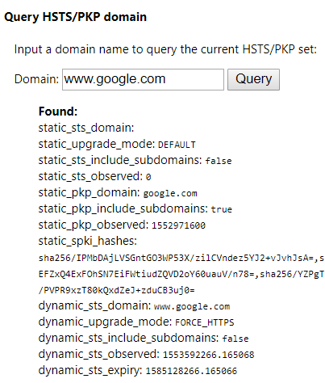
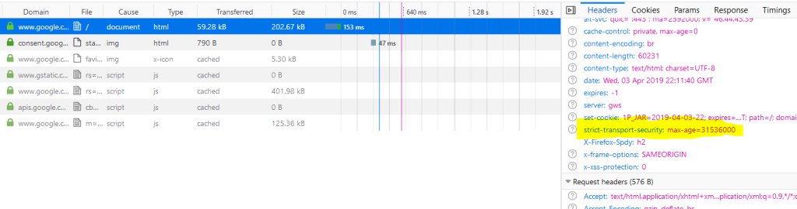
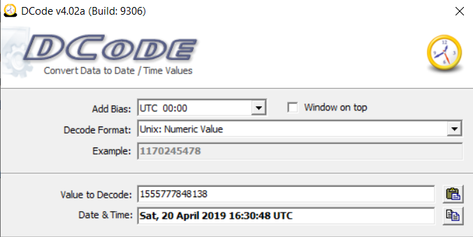

Simon McCabe
WAPT. OSCP. OSWP. PGCert. BSc. Linux+. Security+.

...HSTS...
So first, let’s talk about what HSTS does. HSTS is a Security Policy that protects sites against protocol downgrade attacks (Source). It does this by specifying a HTTP header, named “Strict-Transport-Security“. The header specifies an age in seconds. So an example header might look like this:
Strict-Transport-Security: max-age=31536000 (Source). Wikipedia says that “HSTS Policy specifies a period of time during which the user agent should only access the server in a secure fashion”. HSTS is only acknowledged when sent over HSTS and is ignored when sent over HTTP (Source). Wait, what does this mean?
So let’s say you go to a website: http://example.com – the site loads up insecurely – and if the “Strict-Transport-Security” header is set, it will be ignored by the browser. This is due to compatability reasons (essentially with non-HTTPS user-agents).
Now, if you are directed to https://example.com and the “Strict-Transport-Security” header is set to “max-age=31536000”, all future traffic that’s sent to example.com in an insecure manner will be upgraded and sent over https (for the next year).
So you might be thinking: “Ok, but if you land on the website using HTTP, then surely you can still be subject to MiTM?” – yes, and that’s where HSTS pre-laoding comes in. Google Chrome, Firefox and other browsers have a pre-set list of HSTS sites.
In Chrome, going to: chrome://net-internals/#hsts will allow you to query whether a site is using HSTS. So for example, if you type in google.com into the query, you’ll be presented with the following:
And then if we go to google[d]com using Google Chrome and check the network tab, we can see HSTS is in use (highlighted yellow):
If you type the following in the address bar: “about:support” (without quotes) , and down to “Profile Folder”, you can click “Open Folder”. A file called “SiteSecurityServiceState.txt” contains sites you’ve visited with HSTS ages listed.
In my case, I had a site with the following HSTS timestamp: 1555777848138. This is a Unix timestamp, which means we can decode it.
So as you can see above, a website i’ve visited is due to expire on Saturday 20th April, 2019 at 16:30:48 UTC. This brings a whole new debate on privacy – this is essentially recording sites you visit, although, it’s doing so for security. Important to note, Private Browsing does not write to this file. Also worth noting, Apache, Lighttpd, Nginx and IIS all allow for this directive to be set (Source).
I think that’s about as deep as we need to go on a Wednesday night at 11:22pm! Thanks for reading.